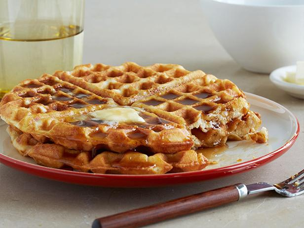

Classic Waffles

Delicious waffles covered in syrup!
These Classic Waffles are light and buttery on the inside, crispy on the outside, and so easy to make! This simple recipe is made in just minutes in one bowl, with no need to whip egg whites or let the batter rest for a long time!
Ingredients:
- 2 cups all-purpose flour
- 1 teaspoon salt
- 4 teaspoons baking powder
- 2 teaspoons white sugar
- 2 eggs
- 1 1/2 cups warm milk
- 1/3 cup butter, melted
- 1 teaspoon vanilla extract
Directions:
- In a large bowl, mix together flour, salt, baking powder and sugar; set aside. Preheat waffle iron to desired temperature.
- In a separate bowl, beat the eggs. Stir in the milk, butter and vanilla. Pour the milk mixture into the flour mixture; beat until blended.
- Ladle the batter into a preheated waffle iron. Cook the waffles until golden and crisp. Serve immediately.